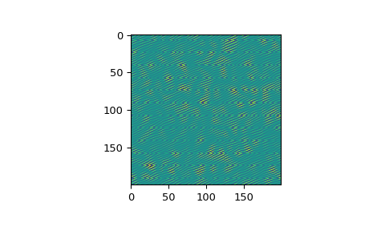

scipy.fft.ifftn¶
-
scipy.fft.ifftn()[source]¶ Compute the N-D inverse discrete Fourier Transform.
This function computes the inverse of the N-D discrete Fourier Transform over any number of axes in an M-D array by means of the Fast Fourier Transform (FFT). In other words,
ifftn(fftn(x)) == xto within numerical accuracy.The input, analogously to
ifft, should be ordered in the same way as is returned byfftn, i.e., it should have the term for zero frequency in all axes in the low-order corner, the positive frequency terms in the first half of all axes, the term for the Nyquist frequency in the middle of all axes and the negative frequency terms in the second half of all axes, in order of decreasingly negative frequency.- Parameters
- xarray_like
Input array, can be complex.
- ssequence of ints, optional
Shape (length of each transformed axis) of the output (
s[0]refers to axis 0,s[1]to axis 1, etc.). This corresponds tonforifft(x, n). Along any axis, if the given shape is smaller than that of the input, the input is cropped. If it is larger, the input is padded with zeros. if s is not given, the shape of the input along the axes specified by axes is used. See notes for issue onifftzero padding.- axessequence of ints, optional
Axes over which to compute the IFFT. If not given, the last
len(s)axes are used, or all axes if s is also not specified.- norm{None, “ortho”}, optional
Normalization mode (see
fft). Default is None.- overwrite_xbool, optional
If True, the contents of x can be destroyed; the default is False. See
fftfor more details.- workersint, optional
Maximum number of workers to use for parallel computation. If negative, the value wraps around from
os.cpu_count(). Seefftfor more details.
- Returns
- outcomplex ndarray
The truncated or zero-padded input, transformed along the axes indicated by axes, or by a combination of s or x, as explained in the parameters section above.
- Raises
- ValueError
If s and axes have different length.
- IndexError
If an element of axes is larger than than the number of axes of x.
See also
Notes
Zero-padding, analogously with
ifft, is performed by appending zeros to the input along the specified dimension. Although this is the common approach, it might lead to surprising results. If another form of zero padding is desired, it must be performed beforeifftnis called.Examples
>>> import scipy.fft >>> x = np.eye(4) >>> scipy.fft.ifftn(scipy.fft.fftn(x, axes=(0,)), axes=(1,)) array([[1.+0.j, 0.+0.j, 0.+0.j, 0.+0.j], # may vary [0.+0.j, 1.+0.j, 0.+0.j, 0.+0.j], [0.+0.j, 0.+0.j, 1.+0.j, 0.+0.j], [0.+0.j, 0.+0.j, 0.+0.j, 1.+0.j]])
Create and plot an image with band-limited frequency content:
>>> import matplotlib.pyplot as plt >>> n = np.zeros((200,200), dtype=complex) >>> n[60:80, 20:40] = np.exp(1j*np.random.uniform(0, 2*np.pi, (20, 20))) >>> im = scipy.fft.ifftn(n).real >>> plt.imshow(im) <matplotlib.image.AxesImage object at 0x...> >>> plt.show()
